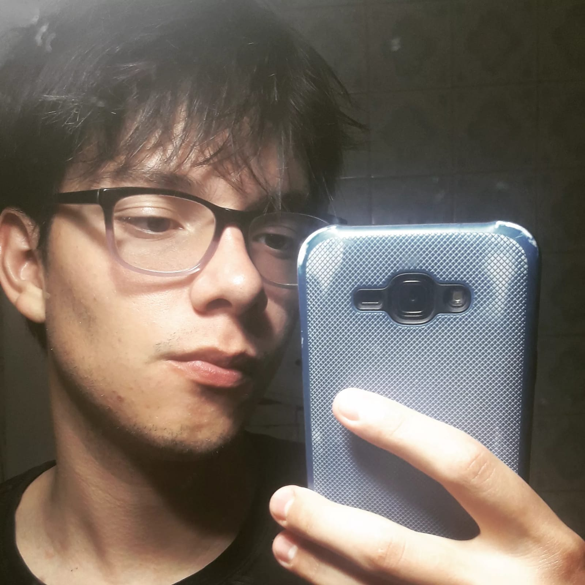
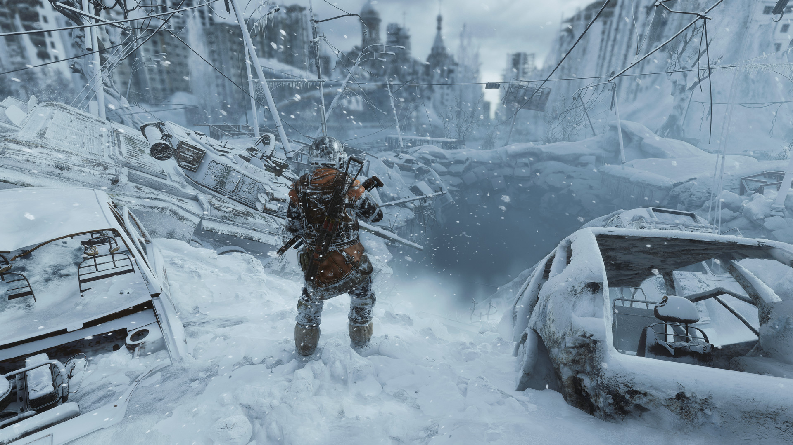
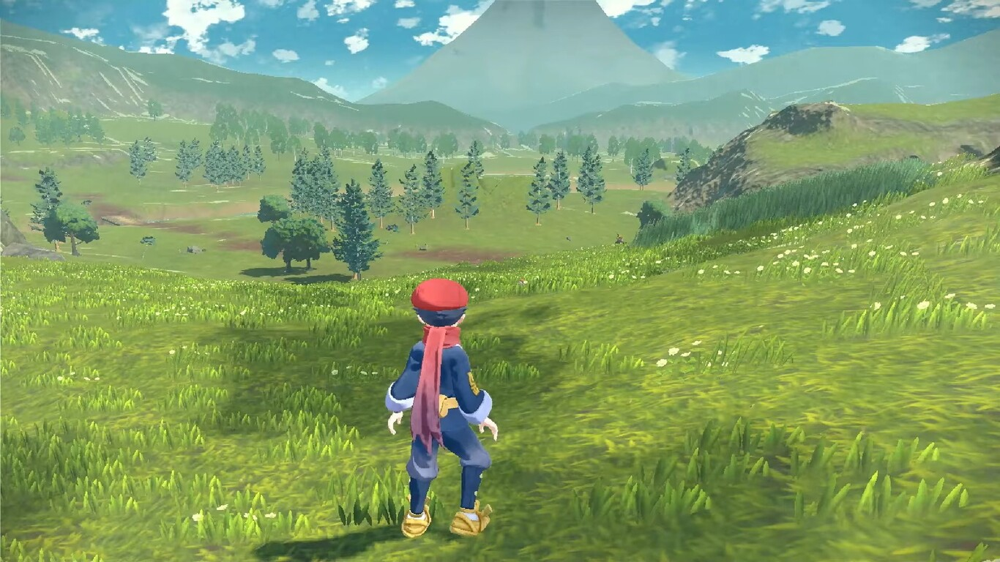
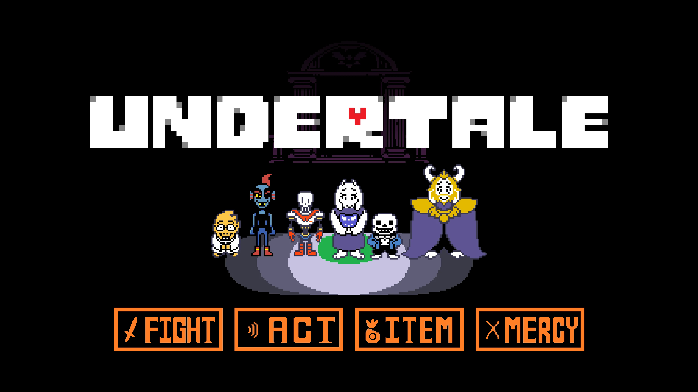

Soy Máximo Ravazzani

Un joven universitario que trata de ser productor de videojuegos
Un poco sobre mi:
Soy de la ciudad Sunchales que estudia Licenciatura en Producción de Videojuego y Entretenimiento Digital en Rafaela, Santa Fe. Soy bueno programando ya que me gusta resolver problemas y el arte no es mí fuerte. Y, no tengo problemas adaptarme a cualquier circuntancia que se presente porque siempre busco una solución.
Mis cosas favoritas son:
- Mirar series y películas.
- Juntarme con mis amigos.
- Ir al gimnasio.
- Hacer deporte, como por ejemplo:
- Y, obviamente, los juegos, los cuales mis favoritos son:
- La saga de Pokémon.
- Metro Exodus.
- Undertale.

Metro Exodus es un videojuego de acción en primera persona desarrollado por 4A Games

Pokémon Arceus es un videojuego de rol de acción desarrollado por Game Freak

Undertale es un videojuego de rol en 2D de 2015 creado por el desarrollador Toby Fox
Mis redes:
Práctica JS:
Ejercicios
TP1 juego:
Juego
Mapa de juegos:
SpaceGame